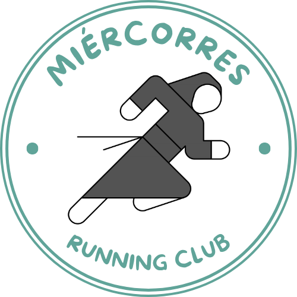
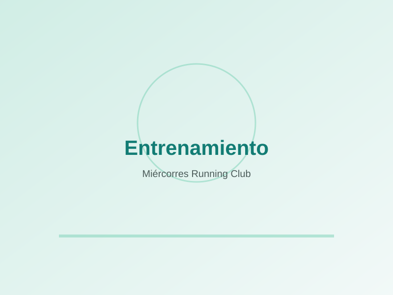
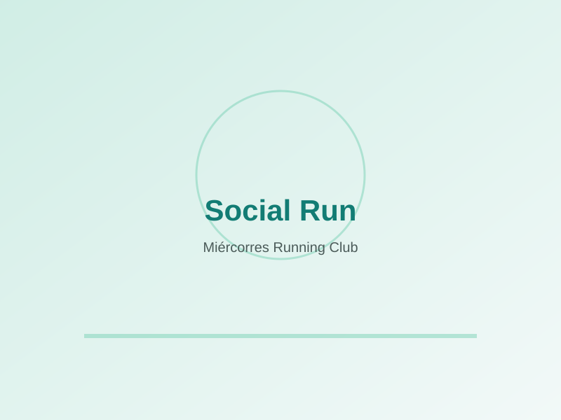
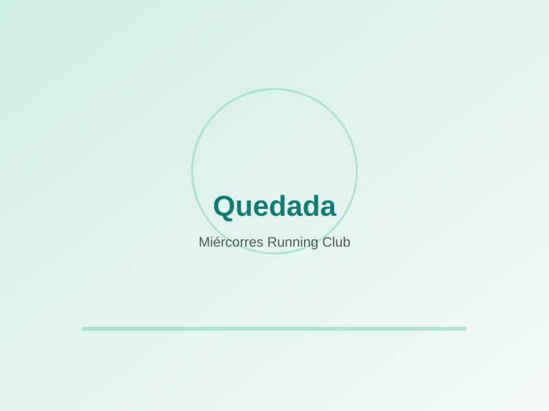
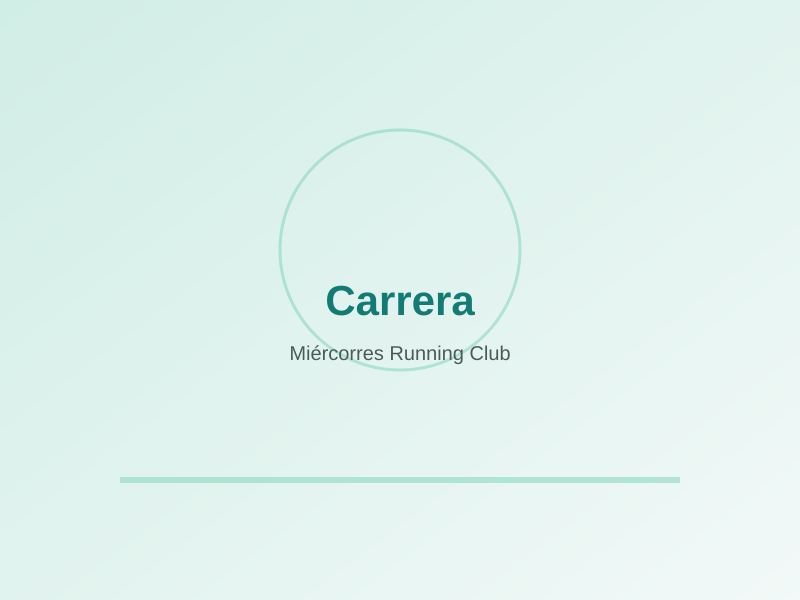
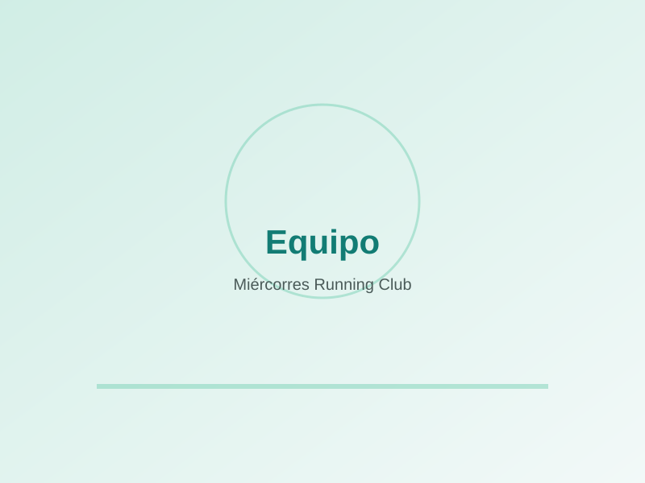
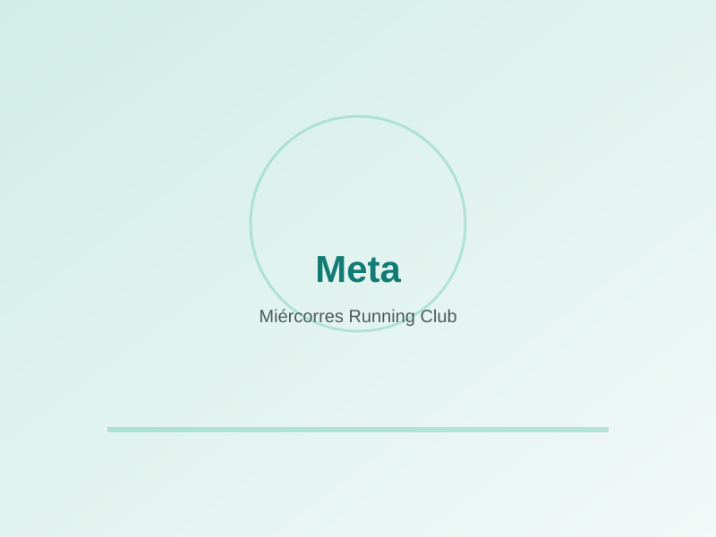

Cualquier ritmo
Grupos por ritmos para que nadie corra solo. Aquí se disfruta, no se compite.
Somos un grupo de amigos de Totana (Murcia) al que le une el gusto por correr sin prisa, con buen rollo y mejores compañías. Cualquier ritmo, cualquier nivel: aquí cabes tú.

Nos juntamos para entrenar, charlar y compartir kilómetros. No importa si acabas de empezar o si llevas años en esto: lo importante es venir con ganas. Salimos, corremos a distintos ritmos y siempre esperamos a los últimos.
Grupos por ritmos para que nadie corra solo. Aquí se disfruta, no se compite.
Quedadas periódicas con recorrido, punto de encuentro y distancia claros.
Ver calendario →Rutas por Totana y Sierra Espuña, y las mejores carreras del municipio.
Descubrir Totana →Sustituye estas imágenes por vuestras fotos reales en la carpeta img/.






De corazón: gracias por interesarte por el Miércorres Running Club. Detrás de cada kilómetro hay risas, ánimos y una comunidad que crece con gente como tú. Te animamos a dar el paso y unirte a nuestras actividades: ven a una Social Run, salúdanos y verás lo fácil que es sentirse parte del grupo. ¡Nos vemos en la salida!